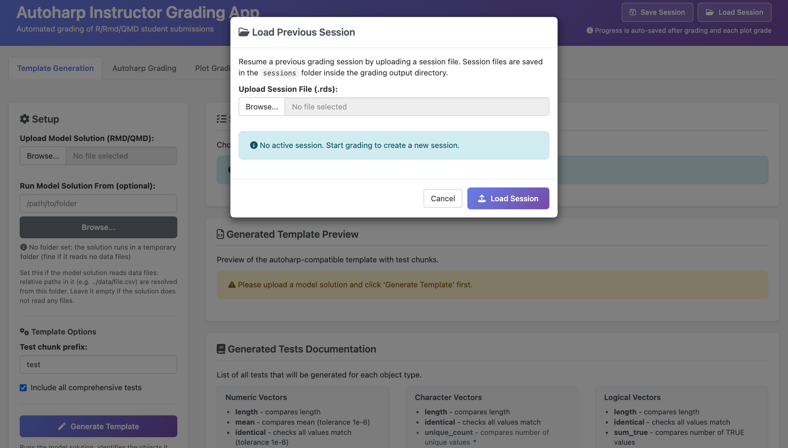
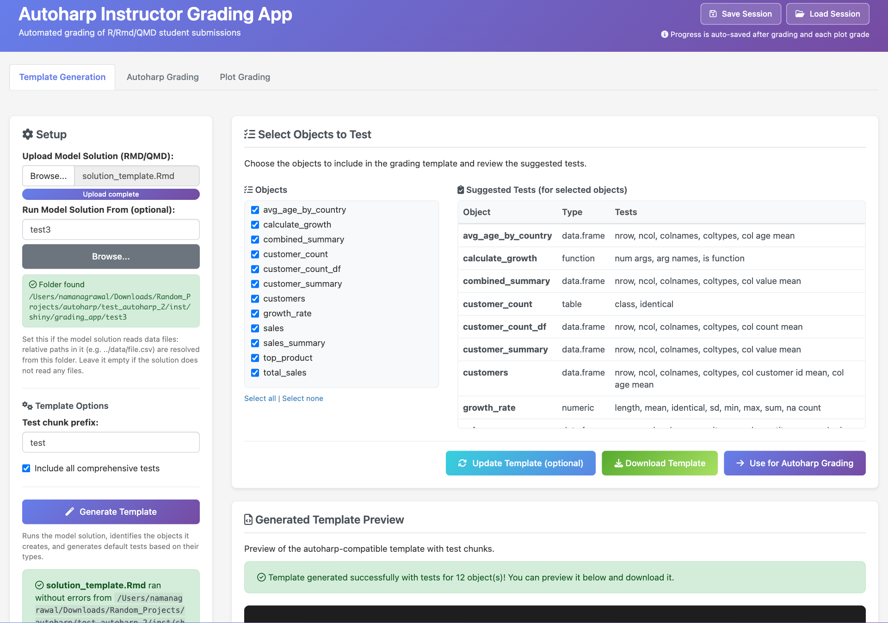
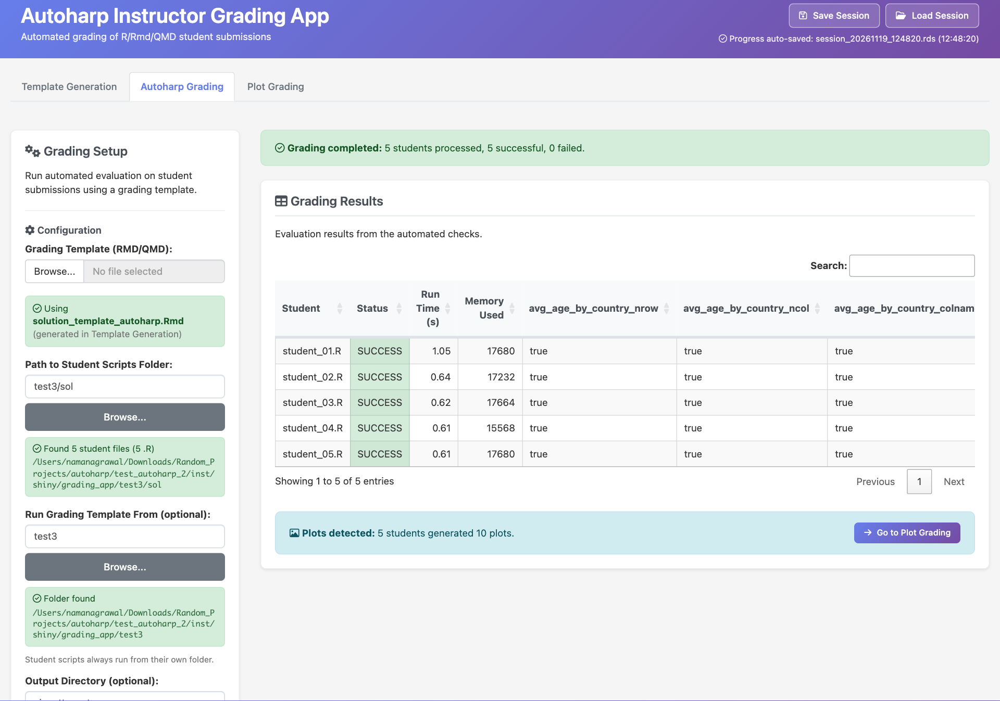
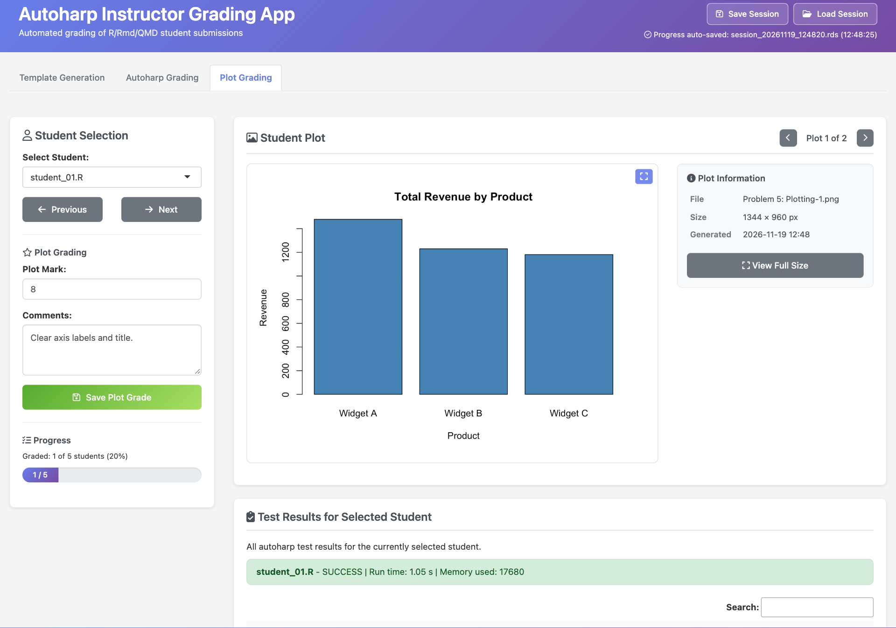

Shiny App: Grading
shiny_grading.RmdIntroduction
The grading app is an instructor-facing shiny web application that provides a
comprehensive environment for evaluating student submissions. Unlike the
similarity app, which focuses on comparing submissions to each other,
the grading app centers on assessing correctness against a model
solution. It turns a plain model solution into an autoharp grading
template, grades every submission with autoharp’s
render_one() function, supports manual grading of the plots
students produce, and saves progress so that grading can be spread over
several sessions. To run the grading app locally:
library(shiny)
runApp(system.file(file.path('shiny', 'grading_app', 'app.R'),
package = 'autoharp'))The application follows a single workflow across three tabs: Template
Generation for turning the model solution into a grading template,
Autoharp Grading for running render_one() on all student
scripts, and Plot Grading for manual assessment of visualizations.
Saving and loading sessions is available at any time from the buttons in
the top-right corner of the header.
Session Management
A key design principle of the grading app is workflow persistence.
Grading large classes often spans multiple sessions, and losing progress
due to application restarts or system interruptions can be frustrating.
The Save Session and Load Session
buttons in the header keep this functionality visible without
interrupting the main grading flow. Sessions are stored as RDS files
containing the complete application state: the model solution and
generated template, the grading template, folder settings, grading
results, plot grades with comments, and the current position in the
grading workflow. The application auto-saves after grading completes and
after each plot grade is saved, and the status line under the buttons
shows when and where progress was last saved. Session files are written
to the sessions folder inside the grading output directory,
and instructors can save manually at any time.

To resume a previous session, the instructor clicks “Load Session”, uploads the saved RDS file and confirms. The dialog also shows information about the current session (session ID, when and where it was last saved, and how many students have been graded). The application restores all state, including input field values and the current student being graded, allowing work to continue exactly where it left off.
Template Generation
The Template Generation tab creates an autoharp-compatible grading
template without requiring instructors to write test code. The
instructor uploads a model solution (an R Markdown or Quarto file
containing correct implementations) and clicks “Generate Template”. If
the model solution reads data files, the instructor also sets the folder
it should run from, so that relative paths such as
../data/file.csv resolve correctly; a solution that reads
no files can be run without one. The student scripts folder is not
needed here: it is set in the Autoharp Grading tab, where the grading
happens.

The key innovation in this tab is the type-based test generation. When the model solution is executed, the application inspects each created object and determines its type. Based on this type information, it suggests appropriate tests automatically: for example, length, mean and standard deviation checks for numeric vectors, dimension and column checks for data frames, and argument checks for functions. The objects found are listed with checkboxes next to a table of the suggested tests for each selected object, and instructors can choose which objects to include. If the model solution produces errors (for example because a data file cannot be found), the setup panel lists them so that the problem can be fixed before grading. The full list of automated tests generated is as follows:
| Test | Description |
|---|---|
| Numeric vectors | |
| length | Compares vector lengths |
| mean/sd/min/max/sum | Statistical comparisons with tolerance |
| NA count | Counts missing values |
| identical values | Element-by-element comparison |
| Data frames | |
| nrow/ncol | Dimension comparisons |
| column names | Checks column name sets match |
| column types | Verifies class of each column |
| numeric column statistics | Mean and SD for numeric columns |
| Matrices | |
| dimensions | Row and column count comparison |
| row/column names | Name attribute comparison |
| element-wise difference | Maximum absolute difference below threshold |
| Functions | |
| argument count | Number of formal arguments |
| argument names | Argument name set comparison |
| Factors | |
| level count | Number of factor levels |
| level names/order | Level set and ordering comparison |
| level frequencies | Frequency distribution comparison |
The generated template adds test chunks to the model solution. Each
chunk includes the autoharp.objs option (specifying which
objects to extract from student code) and the
autoharp.scalars option (specifying which test results to
record). The generated code follows autoharp’s conventions, using
dot-prefixed names for solution objects (e.g., .X for the
solution’s X object). Instructors can preview the generated
template before downloading it, allowing them to verify the test
structure and make any necessary adjustments. The downloaded template
can be used directly with populate_soln_env() and
render_one(), or passed straight to the Autoharp Grading
tab with the “Use for Autoharp Grading” button, which also carries over
the folder the solution runs from and the test chunk prefix.
Autoharp Grading Integration
The Autoharp Grading tab provides a graphical interface for running
autoharp’s core grading workflow. Instead of writing R scripts to call
populate_soln_env() and render_one(),
instructors use the template from the Template Generation tab (or upload
their own) and specify the student scripts folder through the interface.
As the folder path is typed, the app reports how many student files it
found and shows the full path, so relative paths can be checked at a
glance.

The tab offers several configuration options:
- Run grading template from. The folder the grading template is run from, so that relative data paths in it resolve correctly. It defaults to the student scripts folder. Student scripts always run from their own folder.
- Output directory. Where rendered HTML files, plots, logs and session files are stored. A relative output directory is created next to the student scripts folder.
-
Test chunk pattern. The pattern used to identify test
chunks in the template (defaulting to “test”). This corresponds to the
patternargument ofpopulate_soln_env(). - Permission to install packages. Whether the app should automatically install packages that student scripts require but are not present on the grading machine.
- Continue past errors in student code. When ticked (the default), the rest of a student’s script still runs after an error, so the remaining objects are still tested and the errors are listed in a “Code Errors” column. When unticked, a script stops at its first error and is marked FAIL.
After grading completes, results appear in a table showing run status (SUCCESS or FAIL), execution time, memory usage, and all correctness check scalars defined in the template. If plot grades have been assigned in the Plot Grading tab, they appear alongside the automated results. When the student scripts produced plots, the tab reports how many were found and offers a shortcut to the Plot Grading tab. The tab includes an Excel export feature that creates a workbook with two sheets: one containing all grading results together with plot marks and comments, and another containing the plot grades. This format facilitates integration with course management systems and grade books.
Manual Plot Grading
The Plot Grading tab addresses a challenge that automated systems cannot fully solve: evaluating the quality of data visualizations. While code correctness can be verified programmatically, assessing whether a plot effectively communicates its message requires human judgment.

When autoharp grading runs, the application collects all plots generated by each student script, whether it is an R script or an R Markdown or Quarto file. These plots are stored in the grading output folder.
The Plot Grading interface allows instructors to navigate through students sequentially (using Previous/Next buttons or a dropdown selector) and view the current student’s plots one at a time, together with details such as the file name, image size and creation time. A plot can be opened in a full-size view, making it easier to examine details. Instructors assign a numeric plot mark on whatever scale they use, with optional comments; saving the grade moves on to the next student, and a mark that was edited but not saved is kept when moving between students. The tab also displays all automated test results for the current student, providing context when assessing plots. For example, if a student’s data processing produced incorrect values, this context helps explain why their visualization may look different from expectations. A consolidated table combines the automated results with the plot marks and comments for every student and can be exported to Excel. A progress bar tracks grading completion, and all grades are auto-saved to the session file after each entry. This combination of automated collection, easy navigation, and persistent storage streamlines what would otherwise be a tedious manual process.